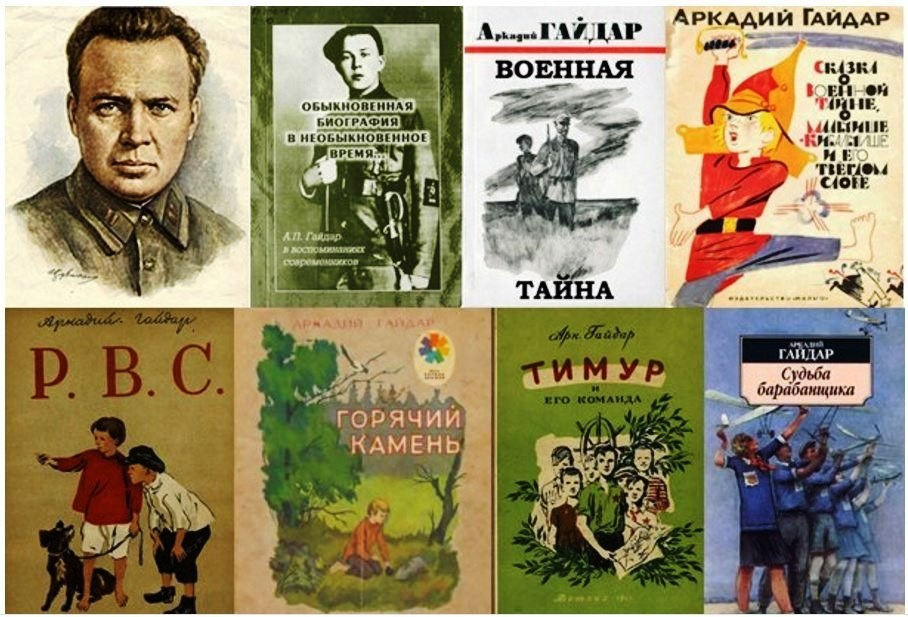

Читаем Гайдара
20 января юные читатели поучаствовали в IV Международной сетевой акции, посвященной творчеству детского писателя Аркадия Гайдара.
Самуил Маршак называл Аркадия Гайдара «всесоюзным вожатым». «Школа», «Судьба барабанщика», «Чук и Гек» — книги писателя издавались миллионными тиражами и стали классикой детской литературы. А после выхода повести «Тимур и его команда» пионеры со всего СССР собирали отряды «тимуровцев» и помогали пожилым людям и семьям фронтовиков.
Как появился псевдоним?
Когда в давние времена шли в поход воины-конники, они посылали вперед всадника. Этот всадник, скачущий впереди всех, всматривающийся в неизведанную даль, куда держал путь отряд, назывался Гайдаром.
Таким впередсмотрящим, ясноглазым дозорным был и сам Гайдар — Аркадий Петрович Голиков. Не случайно, должно быть, он взял себе этот звучный и много говорящий псевдоним. Псевдоним — вымышленное имя.
Гайдар — впередсмотрящий, всадник, скачущий впереди. Сын Гайдара Тимур предположил, что псевдоним его означает: Голиков Аркадий — друг армии.
Из других источников следует, что литературный псевдоним «Гайдар» расшифровывается как «Голиков АркадиЙ Д'АРзамас» (по подражанию имени Д'Артаньяна из «Трёх мушкетёров» Дюма). Автор третьей версии — школьный товарищ Гайдара Адольф Голдин. В школьные годы Аркадий Голиков был большим выдумщиком, романтиком, любил военные игры. Вот и зашифровал своё имя следующим образом. Г — первая буква фамилии «Голиков». А и Й — первая и последняя буквы имени «Аркадий». Д — по-французски означает «из». АР — начальные буквы названия города
Как проходила акция
Творчество Аркадия Гайдара играет особую роль в отечественной литературе, а его произведения знакомы, пожалуй, каждому ребенку – как в России, так и за рубежом.
Подготовка к участию в акции началась заранее: на протяжении двух недель мальчики и девочки готовились к встрече, перечитывали известные романы и рассказы автора, смотрели фильмы по мотивам произведений А. Гайдара, знакомились с биографией писателя. В рамках мероприятия ребята продемонстрировали знание текстов и творческого пути Гайдара, ответили на вопросы тематической викторины, поучаствовали в пантомиме по отрывкам из произведений Аркадия Гайдара.
Юные книголюбы совершили виртуальное литературное путешествие «Герои книг Аркадия Гайдара в книге и на экране». Ребята познакомились с удивительной биографией писателя-воина, который прожил короткую, но яркую жизнь. Узнали о том, как появился псевдоним Гайдар, познакомились с историей создания книг. Потом школьники, разделившись на 3 команды, отвечали на вопросы электронной игры-викторины: «Кто является владельцем следующих предметов?», «Расположи описанные в повести события в правильном порядке», «Вспомни отрывки из книг», «Произведение в картинках», «Узнай героя» и др. Очень приятно видеть и знать, что знаменитые рассказы замечательного писателя Аркадия Гайдара читают и любят уже несколько поколений детей. Также все дружно исполнили песню под караоке «Гайдар шагает впереди». Книги Аркадия Гайдара представляют собой ценность, не проходящую во времени. В произведениях Гайдара всегда есть примеры мужества, благородства, доброты которым не плохо бы было поучиться и в наше время. Также в библиотеке оформлены книжные выставки «Истинный знаток ребячьей души» и «Всадник, скачущий впереди».
Произведения Аркадия Петровича Гайдара можно смело назвать классическими. А классика вечна! В библиотеке на большом экране школьники младших классов на литературном часе познакомились с биографией писателя, посмотрели отрывок из кинофильма «Чук и Гек», совместно почитали самые интересные отрывки из произведения. В завершении встречи, почитав книгу, ребята с неподдельным интересом обращали своё внимание на книги Гайдара.